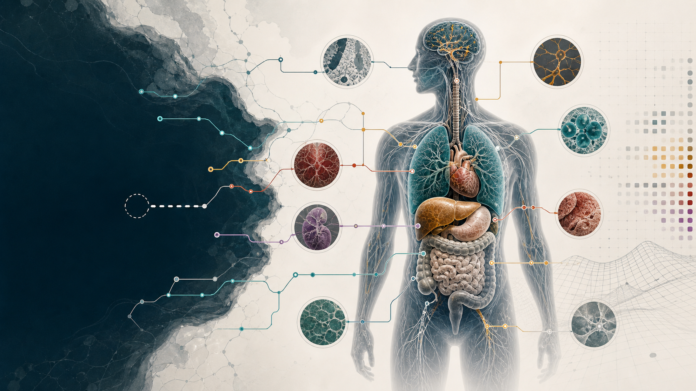

Evidence rules

- Genes
- 10
- Flagship
- CYP2D6
- Seed
- Diognosis
- Status
- Draft
Gene index
Null and low-function records
10 records
| Gene | Evidence | Null model | Domains | Signal | Flags |
|---|
CYP2D6 pilot
CYP2D6 is the deep model; the other genes are summaries.
The pilot separates inherited true nulls, residual function, poor-metabolizer labels, induced functional nulls, compartments, substrates, and evidence lanes.
Compartments
Inherited absence vs induced suppression
CYP2D6 model
One pilot model, four distinct views.
States, compartments, pathway rows, and exposure cases are generated from canonical graph-ready model files, not separate public claims.
Pathway questions
Endogenous routes are questions, not symptom claims.
Evidence tiers
Strength ladder
Source confidence
Evidence lane
Coverage
First release
Developer/API
Use the generated APIs; curate the model files.
The public contract lives in api/index.json. The graph connects genes, variants, states, substrates, compartments, claims, caveats, evidence lanes, and sources.